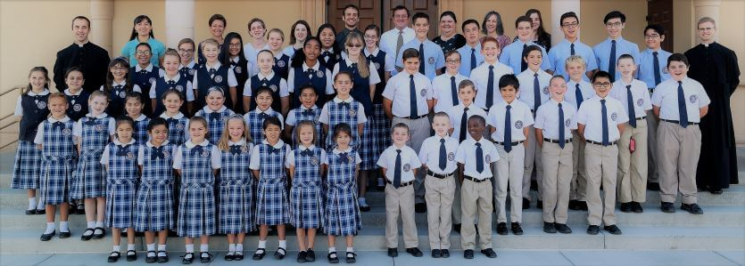
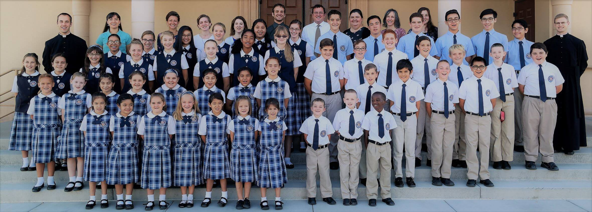

2018 Jog-A-Thon
Our Lady of Sorrows Academy
Thank you for your donation.

Thank you for your donation. Your transaction has completed, and we are sending you an email containing the receipt for your payment.
Please contact us if you have any questions about your donation. Thank you!